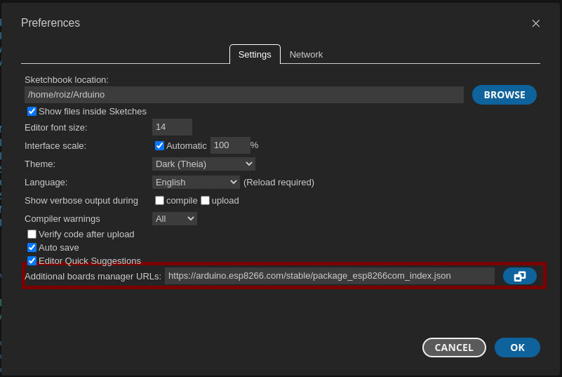
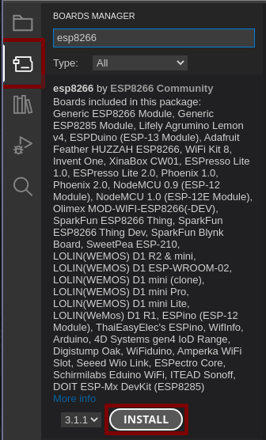
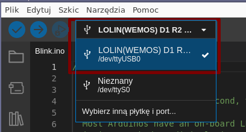
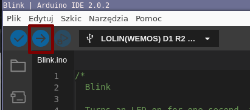

| Tryb nocny |
Spis treści
Wstępne wymagania
- Komputer z systemem Windows / Linux (preferowane ubuntu)
- ESP8266 oraz peryferia (dostarcza prowadzący)
Instalacja środowiska
Arduino IDE
Pobierz i zainstaluj arduino IDE. Poradnik oraz instalator znajdziesz na oficjalnej stronie producenta.PlatformIO (opcjonalne)
Alternatywnym, bardziej rozbudowanym środowiskiem jest PlatformIO. Pozwala ono na tworzenie bardziej złożonych projektów na różne platformy. Podczas warsztatu, będziemy korzystać z ArduinoIDE, jednak przykłady da się uruchomić również przez PlatformIO. Wymaga to jednak nieco dodatkowej konfiguracji. Instrukcja instalacji znajduje się na stronie projektu PlatformIODodanie płytki do środowiska
Domyślnie, ArduinoIDE wspiera mikrokontrolery z rodziny AVR. ESP8266 z którego korzystamy, wymaga więc doinstalowania "sterowników". W tym celu, otwórz ustawienia (skrót CTRL+,) a następnie w oknie "menadżer dodatkowych płytek" wklej:https://arduino.esp8266.com/stable/package_esp8266com_index.json

Następnie, zainstaluj płytkę wybierając z lewej strony Menedżer płytek i wyszukując esp8266.

Hello World!
Dobrą praktyką, jest uruchomienie tak zwanego "Hello World!". W przypadku tworzenia oprogramowania, polega on zazwyczaj na wyświetleniu na ekranie napisu "Hello World". Po co? Ponieważ w ten sposób wiemy, że nasze środowisko działa poprawnie i możemy zaczynać tworzenie kodu. :)W przypadku mikrokontrolerów, używamy tzw. "blinky", czyli mrugania diodą.
Podłącz swoje ESP8266 do komputera. Następnie, u góry ekranu wybierz odpowiednią płytkę z listy rozwijanej (Narzędzia > esp8266 > LOLIN(WEMOS) D1 R2 & mini) oraz odpowieni port, do którego podłączyłeś/aś płytkę.

W lewym górnym rogu edytora, wybierz Plik > Przykłady > 01.Basics > Blink. W Twoim edytorze,
ukaże się następujący kod.
// the setup function runs once when you press reset or power the board
void setup()
{
// initialize digital pin LED_BUILTIN as an output.
pinMode(LED_BUILTIN, OUTPUT);
}
// the loop function runs over and over again forever
void loop()
{
digitalWrite(LED_BUILTIN, HIGH); // turn the LED on (HIGH is the voltage level)
delay(1000); // wait for a second
digitalWrite(LED_BUILTIN, LOW); // turn the LED off by making the voltage LOW
delay(1000); // wait for a second
}
Ostatnim krokiem, jest wgranie kodu na płytkę. Kompilację (tłumaczenie kodu, na instrukcje procesora)
oraz programowanie uruchamiamy strzałką, w lewym górnym rogu.

Jeśli wykonałeś poprawnie wszystkie instrukcje, zobaczysz sekwencję programowania, a następnie Twoja
płytka zacznie mrugać. Możesz teraz przejść, do dalszej części warsztatu. :)
Compressed 265280 bytes to 195521...
Writing at 0x00000000... (8 %)
Writing at 0x00004000... (16 %)
Writing at 0x00008000... (25 %)
Writing at 0x0000c000... (33 %)
Writing at 0x00010000... (41 %)
Writing at 0x00014000... (50 %)
Writing at 0x00018000... (58 %)
Writing at 0x0001c000... (66 %)
Writing at 0x00020000... (75 %)
Writing at 0x00024000... (83 %)
Writing at 0x00028000... (91 %)
Writing at 0x0002c000... (100 %)
Wrote 265280 bytes (195521 compressed) at 0x00000000 in 4.3 seconds (effective 488.0 kbit/s)...
Hash of data verified.
Leaving...
Hard resetting via RTS pin...
Następna strona